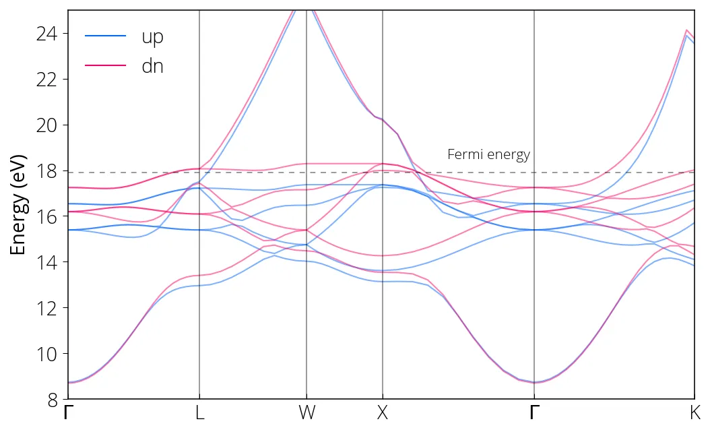

Ni (bandas com spin)
We prepare the input file pw_scf_ni.in and run the calculation:
mpirun -np 8 pw.x -i pw_scf_ni.in > pw_scf_ni.outPrepare the input file for bands calculation pw_bands_ni.in with our desired
k-path and run:
mpirun -np 8 pw.x -i pw_bands_ni.in > pw_bands_ni.outNow we perform the bands.x calculation with spin_component=1 to process
only the spin up bands:
src/ni/bands_ni_up.in
&BANDS
outdir='./tmp/',
prefix='ni',
filband='ni_bands_up.dat',
spin_component = 1,
/Run the calculation:
mpirun -np 8 bands.x -i bands_ni_up.in > bands_ni_up.outSimilarly, we process the spin down bands spin_component=2 and plot them.

Conteúdo adaptado de Spin polarized bandstructure calculation for nickel, do Quantum Espresso Tutorial de Pranab Das, sob licença CC BY 4.0. Alterações: layout, título e navegação traduzidos para o português.